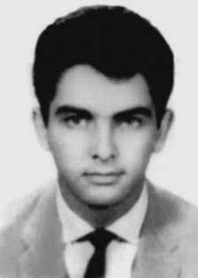

Luiz
Fogaça
Balboni
CIRCUNSTÂNCIAS DA MORTE
De acordo com a falsa versão divulgada pelos órgãos de segurança e reproduzida pela imprensa, Luiz teria falecido devido a ferimentos de arma de fogo, depois de resistir à prisão. No entanto, comprovou-se que Luiz foi vítima de uma emboscada organizada pelos delegados do DOPS/SP Sérgio Paranhos Fleury, Rubens Tucunduva e Firminiano Pacheco, e que faleceu no dia 25 de setembro, no Hospital das Clínicas. Seu laudo de exame necroscópico, datado de 26 de setembro, foi assinado pelos médicos-legistas Irany Novah Moraes e Antônio Valentini. Segundo depoimento de Manoel Cyrillo de Oliveira Neto, também militante da ALN, que se encontrava com Luiz no momento da emboscada, o militante foi ferido por volta das 15 horas do dia 24 de setembro. Investigações da CEMDP comprovaram que Luiz só deu entrada no Hospital das Clínicas às 18h33min e que, portanto, permaneceu por cerca de 3 horas em poder dos agentes do DOPS/SP. De acordo com informações fornecidas pelo hospital, Luiz faleceu à 1h30min do dia 25 de setembro de 1969. O corpo do militante foi sepultado no cemitério de São Miguel Arcanjo (SP).
According to the false version released by security agencies and reproduced by the press, Luiz died from gunshot wounds after resisting arrest. However, it was proven that Luiz was the victim of an ambush organized by DOPS/SP delegates Sérgio Paranhos Fleury, Rubens Tucunduva and Firminiano Pacheco, and that he died on September 25th, at Hospital das Clínicas. His necroscopic examination report, dated September 26, was signed by coroners Irany Novah Moraes and Antônio Valentini. According to testimony from Manoel Cyrillo de Oliveira Neto, also an ALN militant, who was with Luiz at the time of the ambush, the militant was injured around 3 pm on September 24th. CEMDP investigations proved that Luiz was only admitted to Hospital das Clínicas at 6:33 pm and that, therefore, he remained in the hands of DOPS/SP agents for around 3 hours. According to information provided by the hospital, Luiz died at 1:30 am on September 25, 1969. The activist's body was buried in the São Miguel Arcanjo cemetery (SP).
Según la versión falsa difundida por los organismos de seguridad y reproducida por la prensa, Luiz murió por heridas de bala tras resistirse al arresto. Sin embargo, quedó demostrado que Luiz fue víctima de una emboscada organizada por los delegados del DOPS/SP Sérgio Paranhos Fleury, Rubens Tucunduva y Firminiano Pacheco, y que murió el 25 de septiembre, en el Hospital de las Clínicas. El informe del examen necroscópico, fechado el 26 de septiembre, fue firmado por los médicos forenses Irany Novah Moraes y Antônio Valentini. Según testimonio de Manoel Cyrillo de Oliveira Neto, también militante de la ALN, que se encontraba con Luiz en el momento de la emboscada, el militante resultó herido alrededor de las 15 horas del 24 de septiembre. Las investigaciones del CEMDP comprobaron que Luiz fue ingresado en el Hospital das Clínicas recién a las 6:33 pm y que, por lo tanto, permaneció en manos de agentes del DOPS/SP durante aproximadamente 3 horas. Según informaciones proporcionadas por el hospital, Luiz murió a las 01:30 horas del 25 de septiembre de 1969. El cuerpo del activista fue enterrado en el cementerio de São Miguel Arcanjo (SP).